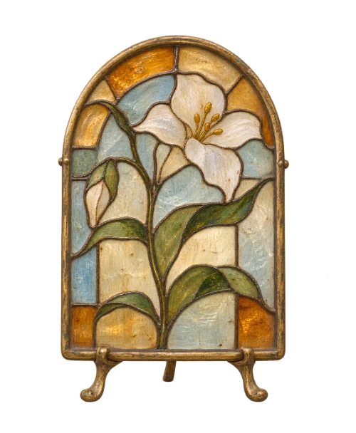

Use the arrows, turn a corner, or swipe to explore.
Please enable JavaScript to open the scrapbook books. Lucy Maria Daly’s nine books cover Work History, University (and building cool cars), Communities, VapeBox, Water Projects, Software Projects, Hardware Projects, Arts and Crafts, and About me.